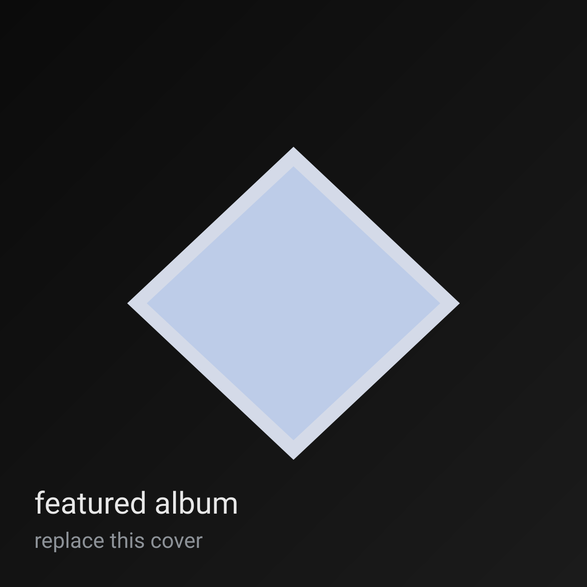

album
2025-08-01
False Memory
camadas frias e ruído bonito.
navegação rápida: busca por texto, filtros por tipo, e grid em colunas (masonry) que segura bem em mobile e desktop. tudo pré-renderizado pra seo, com js só pra melhorar.
dica: no desktop, o layout vira 3 colunas. em mobile, 1 coluna com cards grandes (tap target bom).